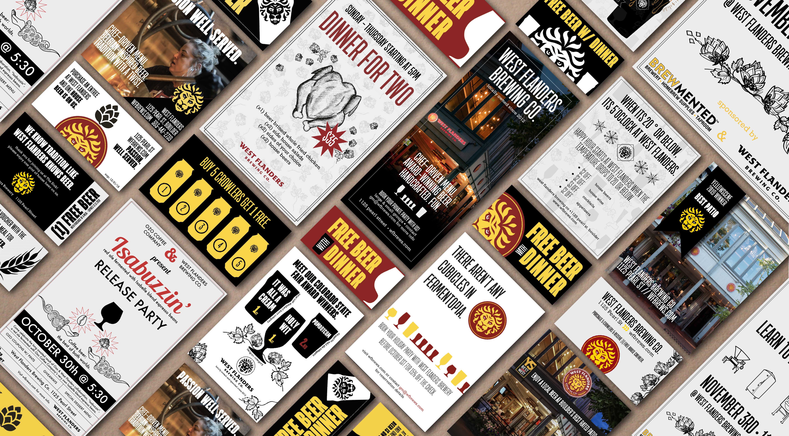

West Flanders Brewing Company
Using an existing logo, create distinct and eye-catching brand elements for a variety of print media.
August '18 - January '20
Services: Graphic Design, Illustration
Deliverables: Menu, Posters, Advertisements, Coupons, Photography
Located on historic Pearl Street in Boulder, Colorado, West Flanders Brewing Company is a local Belgian-inspired restaurant and brewery. The in-house brewing equipment lined amongst industrial brick and Edison era bulbs emits a cozy, timeless and genuine aesthetic.


Design a brand with the core values of the restaurant: local, authentic, cozy, high quality and hand-crafted.
Using their existing logo, I expanded their brand by developing graphic elements and layouts to create consistency in their marketing and content, while still utilizing pre-established colors and typography. I drew inspiration from the unique interior of the restaurant, creating graphic elements of brewing equipment, hops and even employees with simple, bold line strokes that mimicked the various chalkboard murals around the brewery.
A sampling of advertisements, coupons and posters created over my two years with West Flanders.


Poster designs for special release beers.
Redesign food and drink menus to a user-friendly, organized and clean layout that clearly displays a la carte options, add-ons and allergy information.
After observing hundreds of customers struggle to navigate the West Flanders menu, I began to rework the layout. The location of our a la carte sides was confusing, the size was cumbersome on the table, layout was illogical and the menus became easily stained. Add-ons and allergy information was sectioned off to pull reader attention. Menu became foldable versus single page to prevent the menu information from being stained. Other design goals included reducing page size, improving menu flow by organizing sections, adding happy hour information and incorporating our brand.